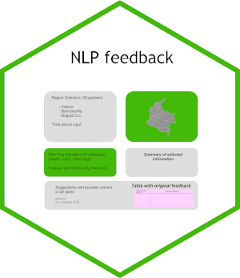
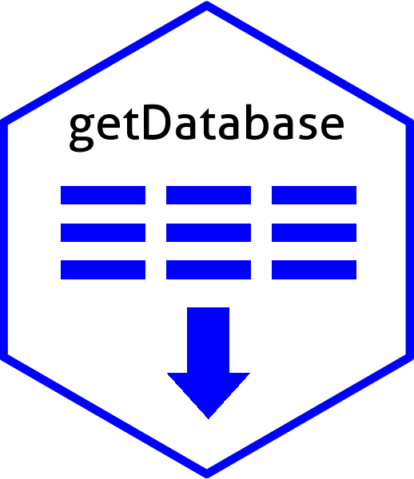

Curriculum Vitae 2024
1 Dados pessoais
Name: Fernando Roa
E-mail: froao at unal.edu.co
2 Cronologia
- Em 2016, como pós-doutorando, escrevi um aplicativo R-Shiny para mostrar números cromossômicos e tamanho do genoma de espécies de plantas, além de algumas análises estatísticas, como regressões ().
- Por volta de 2019, também como pós-doutorando, escrevi um aplicativo R-Shiny para plotar idiogramas, que são representações de cromossomos ().
- Em 2021, fiz o curso de ciência de dados ‘ds4a’ da CorrelationOne. Veja e
- A partir de 2022, trabalhei 16 meses para a Appsilon; durante um ano, trabalhei para uma farmacêutica conhecida, adicionando características e resolvendo bugs em seus aplicativos R-Shiny ().
- No restante do tempo na Appsilon, trabalhei em um aplicativo biológico com mapas de distribuição de espécies no projeto mbaza e também refatorei um aplicativo de processamento de linguagem natural, que eu havia desenvolvido anteriormente em um curso de ciência de dados, usando módulos e este foi apresentado na Conferência Appsilon ().
- Recentemente, trabalhei em vários projetos pessoais do R, como o ShinyInvoice () e o gbif Taxon Distribution
3 Resumo
Trabalhei como contratante (B2B) construindo aplicativos R-Shiny por 1,5 anos, incluindo aplicativos que geram relatórios a partir de dados SQL (principalmente farmacêuticos - )
Tenho experiência em genética e citogenética humana (IGH - PUJ) e vegetal, em técnicas como medição do tamanho genômico por citometria, troca de cromátides irmãs, bandas G, FISH. Também tenho experiência com protocolos citogenéticos moleculares, como extração de DNA, tradução de Nick, reações de restrição e PCR. Outras técnicas foram aplicadas em cursos práticos, como extração de RNA e microssatélites.
Também apliquei essas e outras ferramentas na análise de DNA, como: servidores baseados em Galáxy, sequenciamento de próxima geração (RepeatExplorer) processamento de reads, mais especificamente, softwares de filogenia e DNA, como Geneious, mafft, iqtree e revBayes ().
Falo inglês (ver TOEFL), português (morando > 10 anos no Brasil), espanhol (nativo - Colômbia) e um pouco de alemão (ensino médio alemão) (, , ).
4 Links pessoais
linkedIn: fernando-roa-422bb614
Curriculum: curriculumpu
CV-Lattes: 3239984208140922
Gitlab: ferroao
Github: fernandoroa
ORCID: 0000-0001-5940-4374
5 Período de treinamento
Início: 07-2023 Fim: 11-2023
6 Experiência profisional
- Backend e Frontend para produzir reportes .pdf .docx desde consultas SQL
- Reconstrução de caracteres ancestrais no contexto filogenético em Fabaceae
- Reconstrução de caracteres ancestrais no contexto filogenético do género Callisia
- Tamanho genômico de plantas do Cerrado
Início: 05-2013 Fim: 01-2014
7 Títulos
Título: Biologia VegetalLinha de pesquisa: SistemáticaData do diploma: 02-jul-2012Bolsa: CNPq
Universidade Federal de Pernambuco, Recife, Brasil
Tese: Análise da distribuição dos sitios de rDNA 5S e 45S em cariótipos de plantasOrientador: Marcelo Guerra
Palavras-chave: Base de datos, DNA ribossomal, FISH, citogenética-molecular. Idioma: portuguese
Media de notas: 4.3 (de 0.0 a 5.0) Título: Biologia VegetalLinha de pesquisa: Sistemática
Data do diploma: 05-jul-2010Bolsa: CAPES
Universidade Federal de Pernambuco, Recife, Brasil
Tese: Citotaxonomia molecular do género Callisia (Commelinaceae)Orientador: Marcelo Guerra
Palavras-chave: Citogenética molecular, FISH. Idioma: portuguese
Media de notas: 4.0 (de 0.0 a 5.0)Distinções: Dissertação - aprovada con distinção Título: BiologiaLinha de pesquisa: Genética
Data do diploma: 15-set-2005 Data de revalidação: 3-dez-2014 Universidade Federal de Minas Gerais
Universidad Nacional de Colombia
Tese: Análise citogenética com radiação X de 4MV de células de pacientes con Alzheimer de inicio precoce e controles (Instituto de Genética Humana, PUJ)Orientador: Gloria Osorio, Marta Lucía Bueno
Palavras-chave: Citogenética, Alzheimer. Idioma: espanhol
Media de notas: 4.0 (de 0.0 a 5.0)Distinções: Honras, isenção de pagamento de matrícula
Título: Certificado de Segundo-grauLinha de pesquisa: Ciências
Data do diploma: jul-15-1995
Colégio Alemão, Bogotá
Idioma: espanhol-alemão
Media de notas: 8.1 (from 0.0 to 10.0)
8 Proficiência em línguas
TOEFL-ITP; TOEFL657/677; 103/120C1; C1 CELPE-BRASIntermediário superior
B2
Sprachdiplom IIAprov.
B2-C1
9 Artigos científicos
9.1 Heterochromatic patterns of Citrus revisited: a new look at species origins and karyotype evolution
2023Repo(s): gitlab cerradocytopu
Página-web: shinyapps.io
9.3 Non-Random Distribution of 5S rDNA Sites and Its Association with 45S rDNA in Plant Chromosomes
20159.4 Distribution of 45S rDNA sites in chromosomes of plants: structural and evolutionary implications.
20129.5 Karyotype differentiation in three species of Tripogandra Raf. (Commelinaceae) with different ploidy levels
20109.6 Cytotaxonomy of diploid and polyploid Aristolochia (Aristolochiaceae) species based on the distribution of CMA/DAPI bands and 5S and 45S rDNA sites
2009Berjano, Regina; Roa, Fernando; Talavera, Salvador; Guerra,
Marcelo. Plant Systematics and Evolution.
v280. p219-227

10 Software: pacotes, scripts, páginas
10.1 shinyInvoice: Shiny App - Generate a Pdf Invoice with ‘Rmarkdown’
R package/ Shiny App
Repo(s): github invoice-public, CRAN shinyInvoice
Página-web: shinyapps.io
10.2 NLP for classifying community feedback
Python/R code; Shiny-App
Repo(s): gitlab nlpfeedback, github NLPShiny_rhino_mod
10.3 Modelagem da evo. de carac. citogenéticas
Shiny-App
Repo(s): gitlab cytoevopri
Página-web: shinyapps.io
10.4 idiogramFISH: plot de idiogramas e índices cariotípicos
R-package; Shiny-App
Repo(s): gitlab idiogramFISH, CRAN idiogramFISH
Página-web: shinyapps.io
Docs: gitlab.io
10.5 Curriculum
Rmarkdown
Repo(s): gitlab curriculumpu
Página-web: gitlab.io
10.6 Baixando info. de bases de dados
R Scripts
Repo(s): gitlab getdatabase
10.7 linkScraping: Creating a .bib library from journal html pages
Python/R scripts
Repo(s): gitlab linkscraping
11 Disciplinas ministradas
Nivel: Pós-graduação40hUniversidade Federal de Goiás
Nivel: Graduação64h
Universidade Federal de Goiás
12 Orientação de pesquisa
13 Minicursos ministrados
VI Reunião Brasileira de Citogenética e Citogenômica, Goiânia5hXXV Semana do ICB, Universidade Federal de Goiás6h
14 Palestras em eventos
70 Congresso Nacional de BotânicaTecnologias: R, iqtree, revBayes, MAFFT, StableTraits
Maceió, AL Encontro da liga acadêmica de genética
Tecnologias: R, iqtree, MAFFT
UFG. Goiânia, Brasil XI Workshop de Genética da PUC Goiás
Tecnologias: R, iqtree, revBayes, MAFFT, StableTraits
PUC. Goiânia, Brasil Reunião de citogenética do Brasil Central
Tecnologias: R, mongoDB
PUC. Goiânia, Brasil II Simposio de Genética. Idioma: espanhol
Tecnologias: R
Universidad del Quindío. Armenia, Colombia Society for Experimental Biology Main Meeting. Idioma: inglês
Tecnologias: R
Praga, República Checa
14.7 Cytogenetics and Molecular cytotaxonomy of species of genus Callisia Loefl. (Commelinaceae)
17-08-2007II simposio Latinoamericano de citogenética y evolución.
Idioma: espanhol
UN, Palmira, Colômbia
15 Resumos em Anais de Eventos
15.1 Segregar é a resposta. Citogenética e análises sistemáticas de Callisia Loefl. (Commelinaceae)
PosterVI Reunião Brasileira de Citogenética e Citogenômica. Goiânia
Tecnologias: R, mongoDB, MAFFT, iqtree, revBayes, StableTraits, FISH
Idioma: inglês Roa, F; Telles, MPC08-11/11/2016
IV Congresso Brasileiro de Recursos Genéticos. Curitiba
Tecnologias: R, mongoDB, cytometry
Anais do IV Congresso Brasileiro de Recursos Genéticos Roa, F; Antunes, AM ; Souza, LGR ; Telles, MPC26-29 05/2015
4 Reunião Brasileira de Citogenética. Atibaia
Tecnologias: R, cytometry
Trabalhos da 4ta RBC Guerra M, Roa F23-25 04/2012
Gatersleben Research Conference. IPK Gatersleben, Germany
Tecnologias: R
Annals of the Gatersleben Research Conference. p: 53. Idioma: Inglês Roa F, Guerra M30-03 07/2010
Society for Experimental Biology Main Meeting. Praga, Rep. Tcheca
Tecnologias: R
Annals of the SEB Meeting. p: 262. Idioma: inglês Roa F, Guerra M31-03/04/2009
II Brazilian Symposium of Molecular genetics. Búzios, Brasil
Tecnologias: R
Annals of the II Brazilian Symposium of Molecular genetics. p: 180
15.7 Variação cromossômica da heterocromatina e do DNAr 5S e 45S em espécies do gênero Aristolochia
Poster53 Brazilian congress of genetics. Aguas de Lindóia, Brasil
Annals of the 53 Brazilian congress of genetics. p: 56
15.8 Citogenética e citotaxonomia molecular de algumas espécies do gênero Callisia Loefl. (Commelinaceae)
PalestraII Latin-American symposium of cytogenetics and evolution. Palmira, Colômbia
Tecnologias: FISH
Annals of the II Latin-American symposium of cytogenetics and evolution. p: 217
15.9 Citogenética e Reprodução de um tetraplóide espontâneo de Nothoscordum pulchellum Kunth (Alliaceae)
Poster57 National congress of Botany. Gramado, Brasil
Tecnologias: FISH Roa F, Guerra M03-09/09/2006
52 Brazilian congress of genetics. Foz do Iguaçú, Brasil
Tecnologias: FISH
Annals of the 52 Brazilian congress of genetics. p: 1107
15.11 Transporte de biomassa por uma colônia de Atta laevigata Smith 1958 (Hymenoptera: Formicidae) nas planícies orientais (Puerto López, Meta, Colômbia)
PosterVelasco P, Roa F06-10/10/2003
III Scientific meeting of biology students. Bogotá,
Colômbia
Acta Biológica Colombiana, Vol. 8 No. 2. p:
117. Idioma: espanhol
16 Cursos e oficinas tomados
udemy - Eduonix10hCurso teórico-prático. Idioma: Inglês Correlation One375h
Fiz o curso Data Science de CorrelationOne, focado principalmente em bibliotecas Python, e também uso de Jupyter notebooks, fazendo plots para análise exploratória de dados e gerenciamento de banco de dados. O curso também incluiu o uso de IA, processamento de linguagem natural, árvores de decisão, k-vizinhos mais próximos e redes neurais, entre outros. Meu certificado foi honorífico e o projeto do meu grupo envolveu PNL e esteve entre os 10 melhores (de 90 grupos).
Curso teórico-prático. Idioma: Inglês Universidade Federal de Pernambuco, Recife, Brasil15h
Curso teórico-prático. Idioma: Inglês Universidad Nacional de Colombia. Centro Internacional de Física32h
Curso teórico. Idioma: Espanhol Jardín Botánico de Bogotá60h
Curso. Idioma: Espanhol Universidade Federal de Rio Grande do Sul, Porto Alegre, Brasil24h
Oficina. Idioma: Inglês
16.7 Identificação e caracterização da função gênica en plantas e microorganismos
28/07 - 01/08 2008Curso teórico 53 Brazilian congress of genetics, Águas de Lindóia, Brasil3h
Curso em congresso
16.9 Papel da citogenética no diagnóstico e aconselhamento genético de casais com aborto recorrente
15/08 - 18/08 2007Curso em congresso. Idioma: Espanhol 52 Brazilian congress of genetics, Foz de Iguaçú, Brasil3h
Curso em congresso 52 Brazilian congress of genetics, Foz de Iguaçú, Brasil3h
Curso em congresso Instituto de Genética Humana, Bogotá, Colombia2520h
Estágio. Idioma: Espanhol Instituto Nacional de Salud, Bogotá, Colombia84h
Curso teórico-prático. Idioma: Espanhol
Universidad Nacional de Colombia, Bogotá, Colombia19h
Curso teórico. Idioma: Espanhol